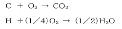

平成29年度 問28 化学プロセス
ある燃料油の組成は炭素90 wt%、水素10 wt%である。この燃料油に理論空気量の1.5倍の空気を供給し完全燃焼させたとき、水蒸気を除く燃焼ガス中の窒素濃度に最も近い値はどれか。燃焼ガスは0℃、100 kPaの条件下にあり、反応は次式による。

ただし、空気中の酸素濃度、窒素濃度はそれぞれ21.0 vol%、79.0 vol%とし、各元素の原子量は、H=1、C=12、O=16とする。
①
79%
②
80%
③
81%
④
82%
⑤
83%
正答
④ 82%
与えられた燃焼の式において水素はHで記載されていることから、ここでは水素原子として扱い計算します。
燃料油が100gあるとして考えます。この時、炭素90ｇ、水素10gが含まれています。炭素の物質量は90 / 12=7.5 mol、水素の物質量は10 / 1=10 molです。
燃焼に必要な酸素の量は7.5 × 1＋10 × (1/4) ＝10 molです。つまり理論空気量は10 × 100/21＝47.6 molとなります。今回、理論空気量の1.5倍の空気を供給しているため、47.6 × 1.5＝71.4 molの空気を供給しています。
供給空気量を基に窒素、二酸化炭素、そして過剰に供給された酸素の量を計算します。
窒素：71.4 × 0.79＝56.4 mol
二酸化炭素：7.5 × 1＝7.5 mol
過剰に供給された酸素：(71.4 – 47.6) × 0.21＝5.0 mol
よって、燃焼ガス量は56.4＋7.5＋5.0＝68.9 m3となり、そのうち窒素の割合は56.4 / 68.9 × 100＝82％です。